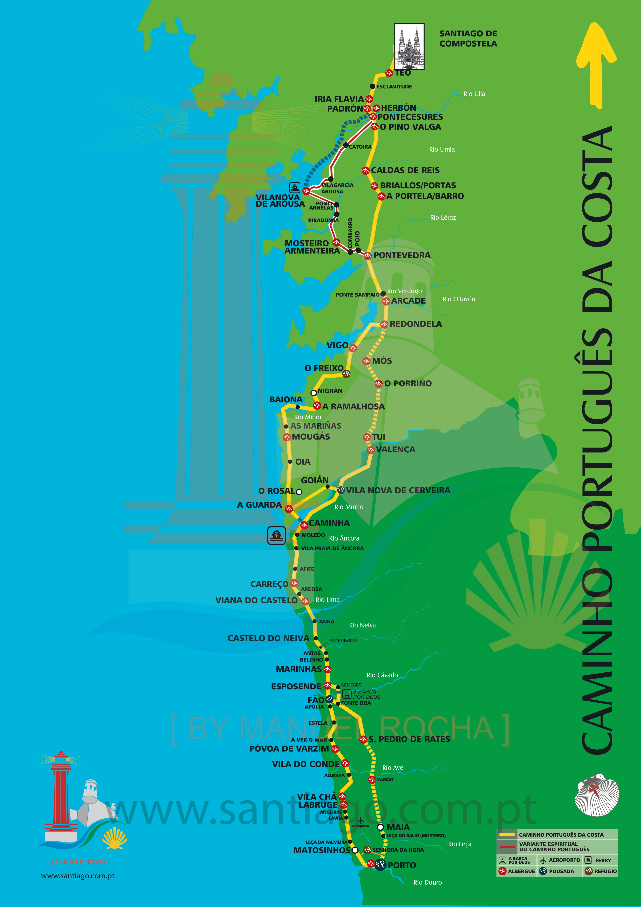

Caminho de Santiago
Explore the Portuguese way
The Caminho de Santiago (Way of St. James) is a historic pilgrimage route leading to the Cathedral of Santiago de Compostela in Galicia, Spain, where it's believed the remains of Saint James the Apostle are buried. Pilgrims have walked this path for centuries, seeking spiritual growth, adventure, or simply to explore Europe's cultural and natural landscapes.
Starting it from Porto has become a popular option for several reasons:
- The Portuguese Way: Porto is a key stop on the Portuguese Way (Caminho Português), one of the main routes to Santiago de Compostela. Starting in Porto offers a manageable distance, about 240 km (150 miles), making it achievable within two weeks. The walk from Porto offers diverse landscapes, including coastal views along the Portuguese Coastal Way (Caminho da Costa) or rolling hills and small villages on the Central Route. Pilgrims enjoy the scenic beauty of Portugal's northern countryside.
- Ease of Access: Porto is well-connected internationally with an airport and good public transportation options, making it a convenient starting point for pilgrims from around the world.
- Less Crowded than the French Way: The Portuguese Way from Porto is generally less crowded than the more famous French Way (Camino Francés). Pilgrims often choose this route for a more peaceful and reflective experience.
- Coastal Alternative: For those who prefer walking along the coast, the Portuguese Way from Porto offers the Coastal Route as an alternative to the inland path, providing stunning ocean views and fresh sea breezes.
- Shorter than Starting in Lisbon: For those who want to experience the Portuguese Way but can't commit to the longer route starting in Lisbon (around 600 km), Porto provides a great middle point to begin.
- Cultural Immersion: The Portuguese Way allows for immersion in both Portuguese and Galician cultures, offering a unique blend of traditions, food, and architecture along the way.
- Historic Significance: Porto has a long history of pilgrimage, and starting from this ancient city adds a rich cultural and spiritual context to the journey. Pilgrims often start in Porto to enjoy a spiritual journey through a deeply religious and culturally significant area, with centuries-old churches, monasteries, and shrines along the path.
People undertake the pilgrimage for religious, personal, or recreational reasons, making it a unique journey blending spirituality, history, and physical challenge. Starting in Porto provides a well-balanced Camino experience, blending convenience, culture, and a manageable pilgrimage distance.
